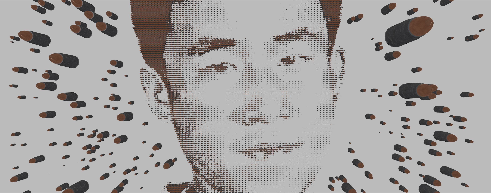
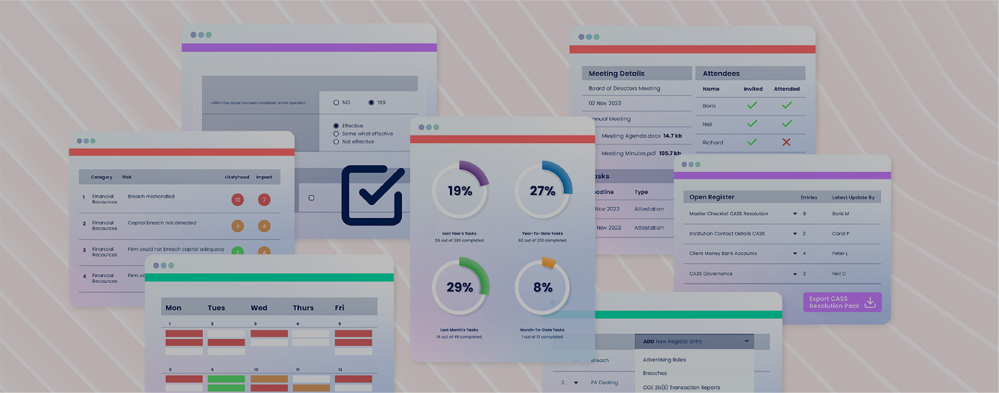
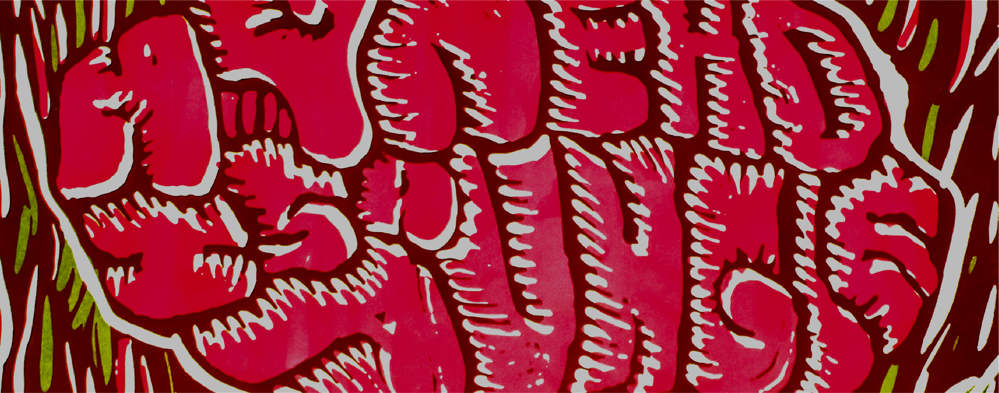

DESIGN


3D CONCEPTING
CNCF Annual Report 2022 ConceptHere I was tasked to create a 3D visualisation of the phrase "Building for the road ahead" that would feature on a CNCF annual report.
Produced with Maxon Cinema 4D Software.

3D CONCEPTING
PACKAGING DESIGN CONCEPTDuring my studies, I created a mock campaign for comfort zone awareness which required a heavy amount of 3D work including an ad video and packaging.
Produced with Maxon Cinema 4D Software.

